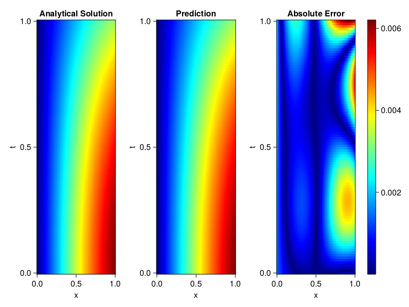
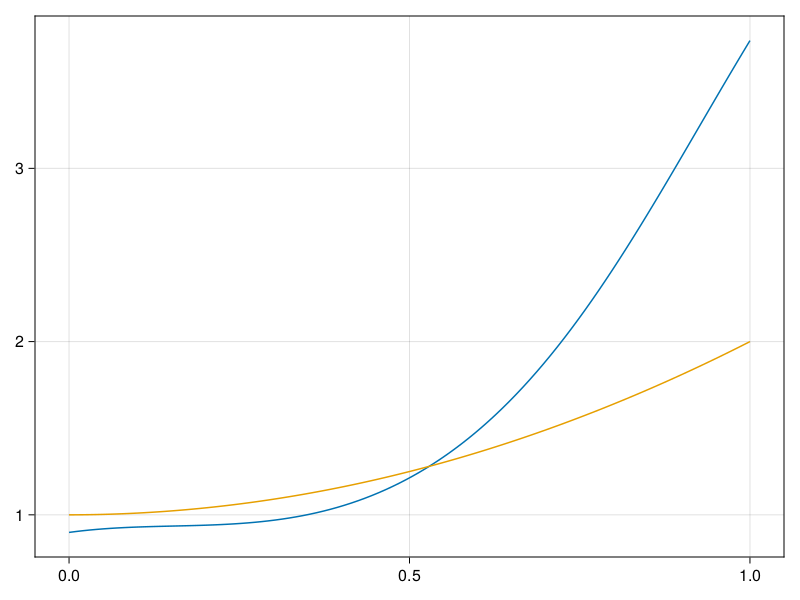

Inverse problem for the wave equation with unknown velocity field
We are going to sovle the wave equation.
using Sophon, ModelingToolkit, IntervalSets
using Optimization, OptimizationOptimJL
@parameters x, t
@variables u(..), c(..)
Dₜ = Differential(t)
Dₜ² = Differential(t)^2
Dₓ² = Differential(x)^2
s(x,t) = abs2(x) * sin(x) * cos(t)
eq = Dₜ²(u(x,t)) ~ c(x) * Dₓ²(u(x,t)) + s(x,t)
bcs = [u(x, 0) ~ sin(x),
Dₜ(u(x, 0)) ~ 0,
u(0, t) ~ 0,
u(1, t) ~ sin(1) * cos(t)]
domains = [t ∈ Interval(0.0, 1.0),
x ∈ Interval(0.0, 1.0)]
@named wave = PDESystem(eq, bcs, domains, [t,x], [u(x,t),c(x)])\[ \begin{align} \frac{\mathrm{d}}{\mathrm{d}t} \frac{\mathrm{d}}{\mathrm{d}t} u\left( x, t \right) =& c\left( x \right) \frac{\mathrm{d}}{\mathrm{d}x} \frac{\mathrm{d}}{\mathrm{d}x} u\left( x, t \right) + \cos\left( t \right) \left|x\right|^{2} \sin\left( x \right) \end{align} \]
Here the velocity field $c(x)$ is unknown, we will approximate it with a neural network.
pinn = PINN(u = FullyConnected((2,16,16,16,1), sin),
c = FullyConnected((1,16,16,1), tanh))
sampler = QuasiRandomSampler(500,100)
strategy = NonAdaptiveTraining(1, (10,10,1,1))NonAdaptiveTraining{Int64, NTuple{4, Int64}}(1, (10, 10, 1, 1))Next we generate some data of $u(x,t)$. Here we place two sensors at $x=0.1$ and $x=0.5$.
ū(x,t) = sin(x) * cos(t)
x_data = hcat(fill(0.1, 1, 50), fill(0.5, 1, 50))
t_data = repeat(range(0.0, 1.0, length = 50),2)'
input_data = [x_data; t_data]
u_data = ū.(x_data, t_data)1×100 Matrix{Float64}:
0.0998334 0.0998126 0.0997503 0.0996464 … 0.275281 0.267213 0.259035Finally we construct the inverse problem and solve it.
additional_loss(phi, θ) = sum(abs2, phi.u(input_data, θ.u) .- u_data)
prob = Sophon.discretize(wave, pinn, sampler, strategy; additional_loss=additional_loss)
@time res = Optimization.solve(prob, BFGS(), maxiters=1000)u: ComponentVector{Float64}(u = (layer_1 = (weight = [0.07436890102986488 0.19762954229417812; 0.25098792221150823 -0.9210102174704817; … ; 1.072747266574648 -1.1675336583431513; 0.33648760833686303 -0.4372684697410163], bias = [-0.14071996444875715; -0.5209050601128821; … ; 0.5017023108425309; 0.03367257244526413;;]), layer_2 = (weight = [0.08732349827298917 0.25862855783781596 … -0.07628544576764908 -0.2562567827757785; 0.5063344202195482 0.2407660917898737 … 0.1181471711009313 -0.299385582437705; … ; 0.22584924686986335 0.19380821021682593 … -0.29609886876020336 0.5558767071833318; -0.6537951379434959 0.19085292393009629 … -0.26632756029701643 0.42714797220943446], bias = [0.03676825828362883; 0.14458823153222305; … ; -0.06407913894061099; -0.07109277178992629;;]), layer_3 = (weight = [0.6246369864426823 0.27817575454666815 … -0.0551891542654637 -0.4021381207191011; -0.18116296543718388 -0.07000928618037427 … 0.02968323320791542 -0.505644766187607; … ; 0.3873054568123943 0.24843156018984666 … -0.27942884978369814 0.2954275699738935; 0.21545156974711505 0.36354689963707687 … -0.12225540733418379 0.670453370772662], bias = [0.04843397286302035; 0.27866894673418896; … ; -0.08574037201918253; -0.08787755392953793;;]), layer_4 = (weight = [0.38377296498112295 0.6255020588470372 … -0.8557622367928271 -0.7914542620290367], bias = [-0.12220081274066724;;])), c = (layer_1 = (weight = [-0.8104287737105984; -1.1398996707469884; … ; -1.7393237275724605; -2.2932205188735706;;], bias = [0.4289299107599119; 0.2405098862137936; … ; -0.04255786245443631; -0.010063128639807902;;]), layer_2 = (weight = [-0.40545144008570416 0.32880137026002126 … 0.4614858989349216 0.625866610119096; 0.7136205820856203 -0.1514367620341981 … -0.6032545765865603 -0.5382793310580124; … ; 0.2184134569993647 -0.4193095633283684 … 0.30735922196771426 -0.4874602322863449; -0.2740252510316417 0.05605981376252222 … -0.025346893164428154 0.7217060718760255], bias = [0.019635625748259684; 0.3264543596227121; … ; 0.11385133963268133; 0.1107988136340473;;]), layer_3 = (weight = [0.08106830973608191 0.7010698898675759 … 0.5700918663394389 0.7811475549462434], bias = [0.7089785477191636;;])))Let's visualize the predictted solution and inferred velocity
using CairoMakie
ts = range(0, 1; length=100)
xs = range(0, 1; length=100)
u_pred = [pinn.phi.u([x, t], res.u.u)[1] for x in xs, t in ts]
c_pred = [pinn.phi.c([x], res.u.c)[1] for x in xs]
u_true = [ū(x, t) for x in xs, t in ts]
c_true = 1 .+ abs2.(xs) |> vec
axis = (xlabel="x", ylabel="t", title="Analytical Solution")
fig, ax1, hm1 = heatmap(xs, ts, u_true, axis=axis; colormap=:jet)
ax2, hm2= heatmap(fig[1, end+1], xs, ts, u_pred, axis= merge(axis, (;title = "Prediction")); colormap=:jet)
ax3, hm3 = heatmap(fig[1, end+1], xs, ts, abs.(u_true .- u_pred), axis= merge(axis, (;title = "Absolute Error")); colormap=:jet)
Colorbar(fig[:, end+1], hm3)
fig
fig, ax = lines(xs, c_pred)
lines!(ax, xs, c_true)
fig